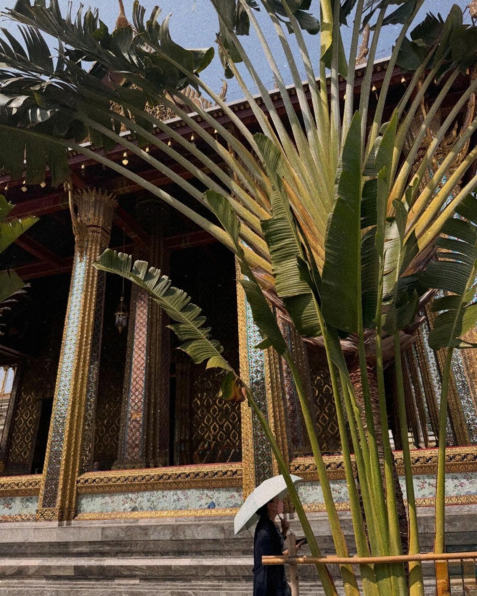

01
Des matières qui ont une histoire
Teck, rotin, bambou, lin, céramique : nous privilégions des matières qui apportent texture, chaleur et caractère aux espaces.
L'UNIVERS KASA
Une maison imaginée autour des matières, des savoir-faire et d'une autre façon d'habiter son intérieur.

L'ORIGINE
KASA est née de plusieurs mois passés à parcourir l'Asie du Sud-Est, à la rencontre de cultures, de savoir-faire et de matières qui m'ont profondément inspirée.
Au fil de ces voyages, j'ai découvert une richesse particulière dans l'artisanat local : le travail du bois, du rotin, du bambou, du textile ou encore de la céramique. Des matières simples, travaillées avec patience, qui donnent naissance à des objets uniques et profondément ancrés dans leur environnement.
Cette découverte a fait naître une envie : faire connaître cette richesse autrement en France, en la faisant entrer dans nos intérieurs à travers une sélection de pièces contemporaines, naturelles et chaleureuses.
KASA imagine ainsi une maison inspirée par ces savoir-faire, sans chercher à les reproduire ni à les folkloriser. L'objectif est de créer un dialogue entre ces influences et les intérieurs d'aujourd'hui.
L'INSPIRATION
01
Teck, rotin, bambou, lin, céramique : nous privilégions des matières qui apportent texture, chaleur et caractère aux espaces.
02
Nous imaginons une collection intemporelle, pensée pour accompagner les intérieurs au fil des années plutôt que de suivre chaque nouvelle tendance.
03
Nos inspirations viennent de matières, de formes et de savoir-faire d'Asie du Sud-Est, réinterprétés dans une esthétique contemporaine.
« Créer un intérieur qui nous ressemble, c'est aussi choisir ce que l'on veut garder. »